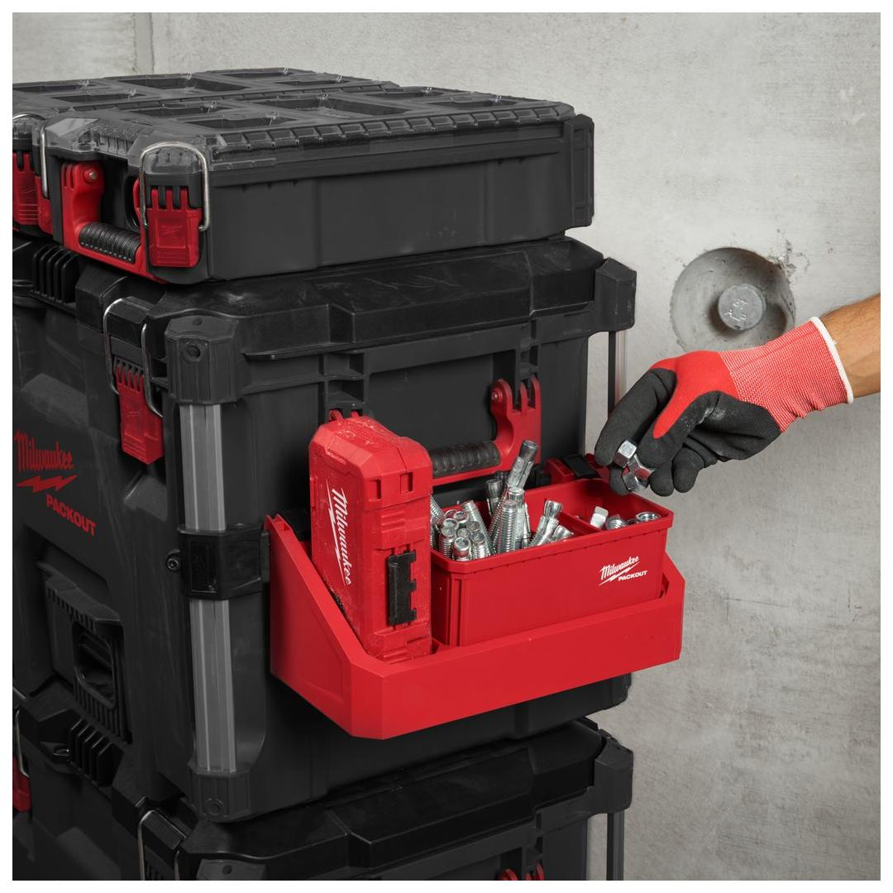
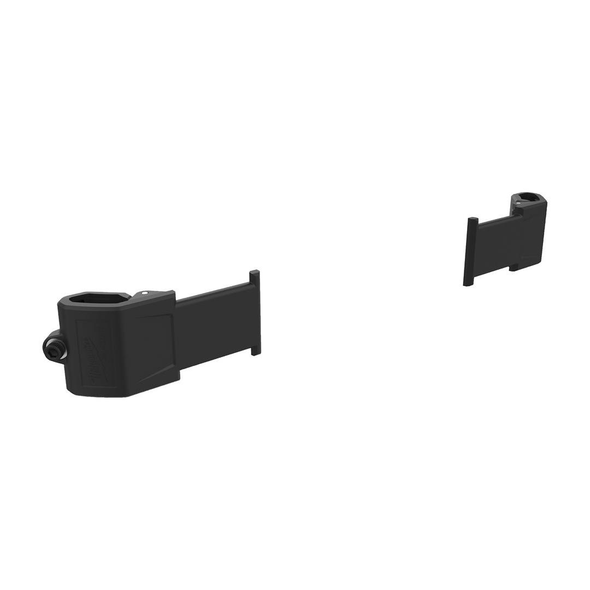
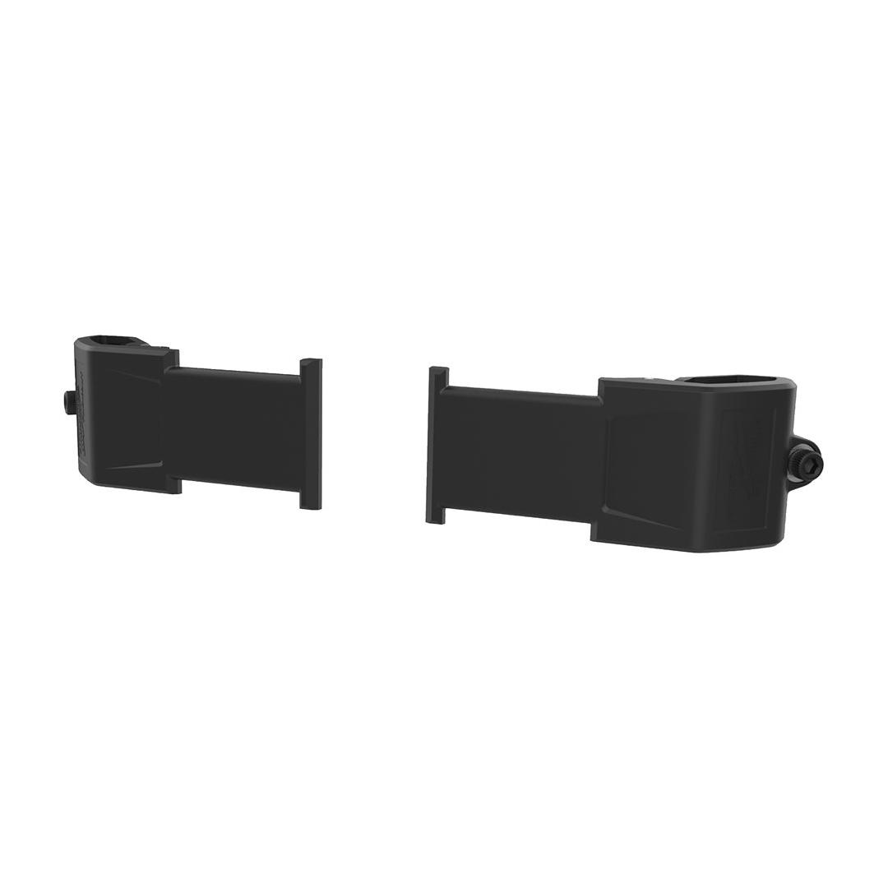

<h1>Milwaukee | PACKOUT Side Mount Adapter (2 Pack)</h1><p>4932498643</p><div style="display:flex;flex-wrap:wrap;gap:8px"></div><h4>Features</h4><ul><li>Attach to PACKOUT™ metal rails in either orientation.</li><li>Impact resistant body.</li><li>Easily swap toolbox attachments on and off.</li><li>Part of the PACKOUT™ modular storage system.</li></ul><h4>Information</h4><table><tr><td>Capacity [kg]</td><td>11</td></tr><tr><td>Dimensions (mm)</td><td>52 x 122 x 45</td></tr><tr><td>MOQ</td><td>1</td></tr><tr><td>Pack quantity</td><td>2</td></tr></table><h4>Weight</h4><table><tr><td>WEB_You tube Milwaukee 1x1 Product Clip</td><td>RJAb7MdOf8Q</td></tr></table>